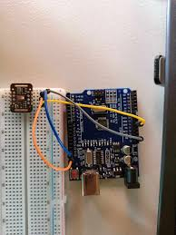
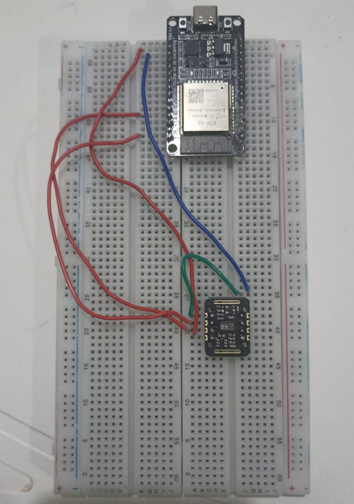
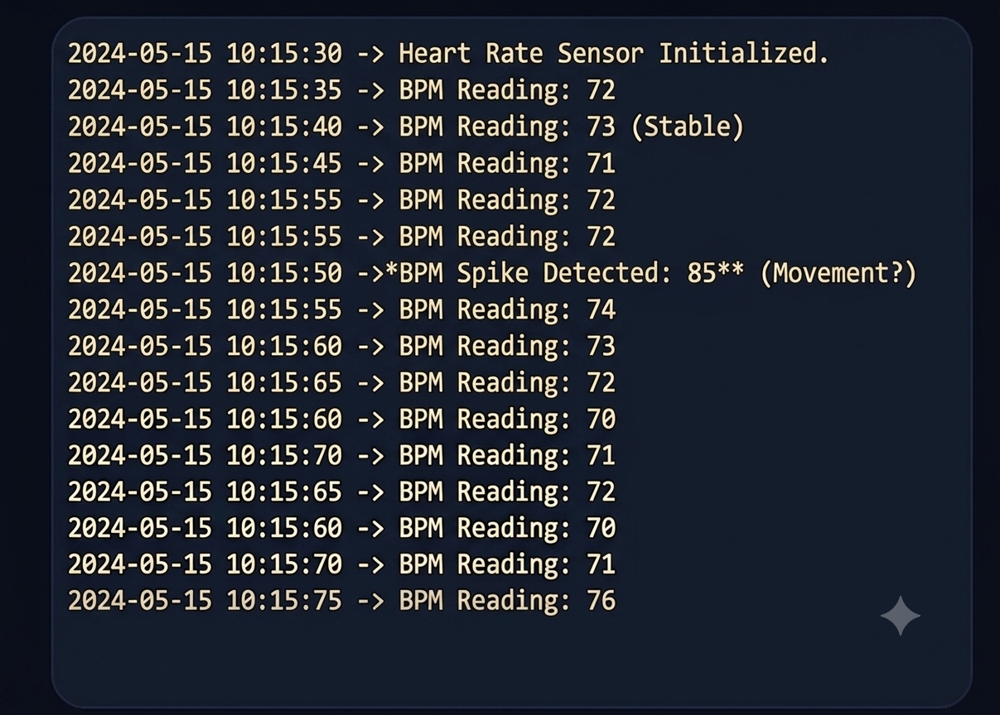

Sistema de Monitoreo de Frecuencia Cardíaca
El sistema consiste en un Arduino Uno conectado al módulo sensor MAX30102 mediante el protocolo de comunicación I²C. El sensor coloca su ventana óptica sobre la yema del dedo del usuario y emite pulsos de luz roja (660 nm) e infrarroja (880 nm). El tejido vivo absorbe estas longitudes de onda de manera diferente según el volumen de sangre presente en cada latido; esta variación es captada por el fotodetector del MAX30102 y enviada al microcontrolador como señal analógica digitalizada.
El sketch de Arduino procesa esta señal mediante un algoritmo de detección de picos y calcula los latidos por minuto (BPM), que se visualizan en el monitor serial del IDE. El prototipo demuestra el principio de fotopletismografía (PPG) utilizado en los oxímetros de pulso comerciales.
Materiales Utilizados
Arduino Uno
Microcontrolador ATmega328P, plataforma principal de control y procesamiento.
Sensor MAX30102
Módulo de oximetría y pulso. Comunicación I²C, 3.3 V de alimentación.
Protoboard
Placa de pruebas sin soldadura de 830 puntos para el montaje del circuito.
Cables Jumper
Macho-macho y macho-hembra para interconectar Arduino, sensor y protoboard.
IDE de Arduino
Software gratuito para programar, cargar el sketch y visualizar datos en el monitor serial.
Cable USB
Alimentación del Arduino desde la computadora y transmisión del sketch.
Proceso de Construcción
Identificar los pines del MAX30102
El módulo expone cuatro pines principales: VIN (3.3 V o 5 V), GND, SDA (datos I²C) y SCL (reloj I²C). Se revisa la hoja de datos del fabricante para confirmar el pinout.
Conectar el circuito en la protoboard
Se usan cables jumper para conectar VIN al pin 3.3 V del Arduino, GND a tierra, SDA al pin A4 y SCL al pin A5 (bus I²C del Arduino Uno).
Instalar la biblioteca SparkFun MAX3010x
Desde el Administrador de Bibliotecas del IDE de Arduino se instala la librería SparkFun MAX3010x Pulse and Proximity Sensor Library, que abstrae la comunicación I²C con el sensor.
Programar el sketch de detección de pulso
Se adapta el ejemplo heartRate incluido en la biblioteca. El sketch inicializa el sensor, lee muestras del canal infrarrojo y aplica un algoritmo de detección de picos para calcular los BPM, que luego imprime por el monitor serial.
Cargar el sketch y verificar la lectura
Se compila y carga el programa en el Arduino. Se abre el Monitor Serial a 115,200 baudios y se coloca el dedo sobre el sensor. Los valores de BPM deben estabilizarse en 3–5 segundos.
Calibrar y registrar resultados
Se comparan las lecturas del prototipo con un oxímetro comercial para validar la precisión. Se documentan los valores obtenidos en distintos estados (reposo, ejercicio suave) y se sacan conclusiones.
Funcionamiento del Circuito
Emisión de Luz
El MAX30102 activa alternativamente sus LEDs rojo (660 nm) e infrarrojo (880 nm). Los pulsos de luz se controlan con precisión para minimizar el consumo y el ruido en la lectura.
Detección Fotoeléctrica
Un fotodetector de alta sensibilidad mide la luz reflejada por el tejido. Cada latido provoca un incremento en el volumen sanguíneo que modifica la absorción, creando una onda característica (PPG).
Procesamiento Digital
El ADC interno del sensor digitaliza la señal y la envía al Arduino por I²C. El microcontrolador detecta los picos de la onda PPG y calcula el intervalo R-R para obtener los BPM.
Resultados Obtenidos
Las pruebas realizadas con distintos usuarios mostraron que el prototipo es capaz de estabilizar una lectura confiable en aproximadamente 4–6 segundos tras colocar el dedo sobre el sensor. Los valores registrados se compararon con un oxímetro de pulso de referencia, obteniendo una diferencia promedio de ±3 BPM, lo cual es aceptable para un prototipo educativo.
| ESTADO | PROTOTIPO (BPM) | REFERENCIA (BPM) | DIFERENCIA |
|---|---|---|---|
| Reposo | 68 | 66 | +2 |
| Actividad leve | 84 | 82 | +2 |
| Ejercicio moderado | 113 | 110 | +3 |
Imágenes del Proyecto


